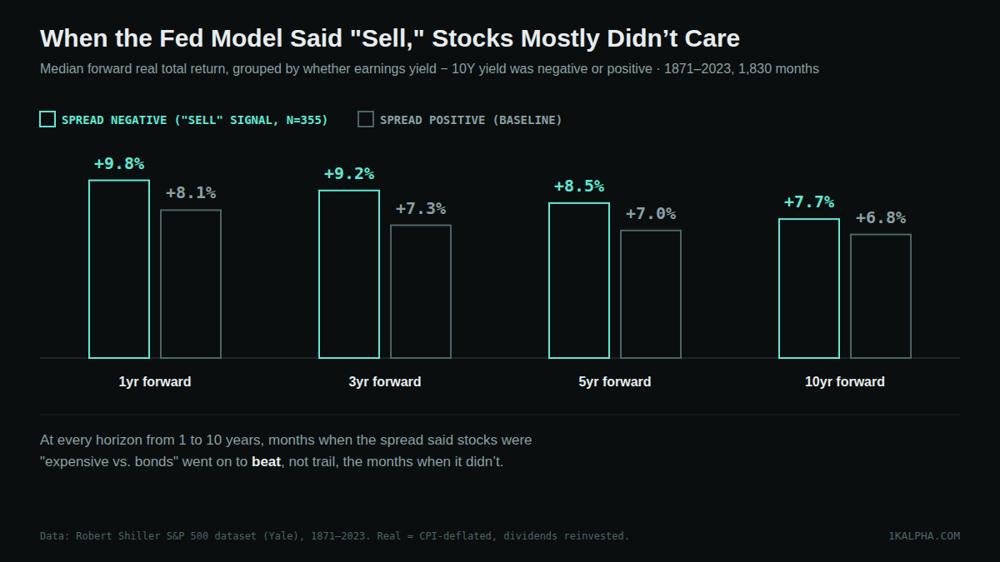
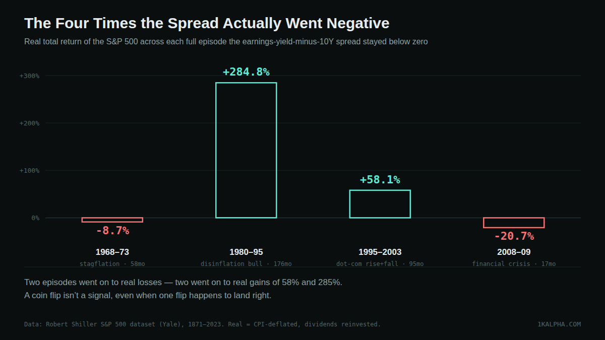

Does a Negative "Fed Model" Spread Predict Weak Stock Returns? A 152-Year Test
Financial media spent a lot of 2026 pointing out the same thing: the gap between what stocks pay and what bonds pay has nearly disappeared. Axios ran a piece in May headlined "The disappearing premium to own stocks," and Fisher Investments devoted a note to "negative equity risk premiums" around the same time. The underlying comparison is often called the Fed Model: take the S&P 500's earnings yield (earnings divided by price — the inverse of the P/E ratio) and subtract the 10-year Treasury yield. When that spread is wide, stocks look cheap relative to bonds. When it's thin or negative, the claim goes, investors are taking equity risk without being paid extra for it, and forward stock returns should suffer.
That's a specific, testable claim, not just a vibe about valuations feeling high. So I tested it against 152 years of data: every month from 1871 through 2023 where both an earnings yield and a 10-year yield exist, and what the S&P 500 actually did in the 1, 3, 5, and 10 years that followed.
Short version: the signal doesn't hold up. Across the full sample, months when the spread was negative — the exact condition commentators are worried about right now — went on to beat, not trail, months when the spread was positive, at every single horizon tested. Restrict to the modern era (1960 onward, the period most comparable to today's market), and whatever relationship existed essentially vanishes: the correlation between the spread and forward returns is statistically indistinguishable from zero.
Methodology
I used the same source as the other backtests on this site: Robert Shiller's monthly S&P 500 dataset, mirrored as CSV by datasets/s-and-p-500 on GitHub. It includes monthly price, dividends, trailing earnings, CPI, and a long-term interest rate series, reliably populated from January 1871 through June 2023 (after that the mirror zero-fills the slower-moving columns).
For every month t in that window I computed:
- Earnings yield = trailing earnings ÷ price, as a percentage.
- Fed Model spread = earnings yield − the long-term interest rate, in percentage points. Negative means bonds were yielding more than stocks' earnings yield.
- Forward real total return at 1, 3, 5, and 10 years — a CPI-deflated index with dividends reinvested monthly, annualized over the horizon.
That gives between 1,355 and 1,818 overlapping starting months per horizon (fewer at longer horizons, since the last starting month has to leave room for the full forward window inside the reliable period). I computed the Pearson correlation between the spread and each forward-return horizon, then split months into "spread negative" and "spread positive" groups and compared their median forward returns directly.
The headline result: negative spread did not mean weak returns
Across the full sample, the correlation between the spread and forward real returns is positive at every horizon — r = 0.123 at 1 year, rising to r = 0.342 at 10 years. Taken at face value, that's the Fed Model's basic direction: a wider spread (stocks cheap vs. bonds) associates with better forward returns. But directly comparing the two groups the current debate actually cares about — months where the spread was negative (the "sell" reading) against months where it was positive — tells a different story:

At every horizon, negative-spread months had a higher median forward return than positive-spread months: +9.8% vs. +8.1% at 1 year, +9.2% vs. +7.3% at 3 years, +8.5% vs. +7.0% at 5 years, +7.7% vs. +6.8% at 10 years. That's the opposite of what the Fed Model predicts. The positive overall correlation is being driven by something else — and it's worth being honest about what.
Where the positive correlation actually comes from
Sorting all 1,830 months into quintiles by starting spread, the top quintile (spread above roughly +5 percentage points) has by far the best forward returns at every horizon — and 342 of its 342 ten-year windows had positive real returns. But that quintile isn't spread evenly across history: 89 of its months are in the 1940s and 73 are in the 1950s, with another small cluster in the 2010s. That's not a general "wide spread predicts good returns" law so much as a description of two specific eras — the postwar boom (when bond yields were held low and earnings yields were very high) and the post-2008 zero-rate decade (when bond yields collapsed toward zero even though stocks weren't obviously cheap) — both of which also happened to be very good decades for stocks, largely for reasons that have nothing to do with the spread itself. Pull the regression line out of those two eras and the "wide spread, good returns" relationship gets a lot weaker.
The modern era: no relationship at all
Fed Model critics — most notably Cliff Asness's 2003 paper "Fight the Fed Model," published in the Journal of Portfolio Management — have long argued it's not a reliable forecasting tool, partly because its apparent track record leans heavily on specific eras rather than a stable relationship. Restricting the sample to 1960 onward (dropping the 1940s–50s postwar cluster, and closer to today's market structure and monetary regime) tests that directly:
| Horizon | n | Correlation (r) | Neg-spread median fwd | Pos-spread median fwd |
|---|---|---|---|---|
| 1yr | 750 | 0.067 | +9.7% | +7.9% |
| 3yr | 726 | 0.010 | +9.2% | +6.7% |
| 5yr | 702 | −0.027 | +8.5% | +6.1% |
| 10yr | 642 | 0.041 | +7.6% | +5.6% |
1960–2023 subsample. With n in the 640–750 range, a correlation would need to be roughly ±0.07 or larger to clear conventional statistical significance (p<0.05) — every r in this table falls inside that noise band, including the one with the "wrong" sign.
Post-1960, the correlation is effectively zero at every horizon — and negative-spread months still beat positive-spread months at every horizon, by a wider margin than in the full sample. If the Fed Model spread carries real forecasting information about forward stock returns, the modern era — the one most comparable to today's market — is not where it shows up.
The four times it actually happened
355 of the 1,830 months had a negative spread, but that's not 355 independent events — it's four distinct multi-month episodes, plus a handful of one-to-four-month blips. Looking at what actually happened across each full episode is a cleaner way to see the pattern than counting months:

| Episode | Length | Starting spread | Starting CAPE | Real return |
|---|---|---|---|---|
| 1968-10 – 1973-08 | 58mo | −0.10pp | 22.0 | −8.7% |
| 1980-10 – 1995-05 | 176mo | −0.46pp | 9.4 | +284.8% |
| 1995-07 – 2003-05 | 95mo | −0.06pp | 23.4 | +58.1% |
| 2008-05 – 2009-10 | 17mo | −0.00pp | 23.7 | −20.7% |
Two episodes (the 1968–73 stagflation stretch and the 2008–09 financial crisis) went on to real losses. Two episodes (1980–95 and 1995–2003) went on to large real gains. That's a coin flip, not a signal — and it's worth noticing that the two episodes that went badly also started from a genuinely stretched CAPE (22.0 and 23.7), while the episode that produced the best outcome in the whole dataset, 1980–95, started from a CAPE of 9.4 — one of the cheapest readings in the index's history. The spread went negative in 1980 almost entirely because bond yields were extraordinarily high (11.75%, Volcker-era), not because stocks were expensive. The Fed Model spread can go negative for two very different reasons — stocks getting pricier, or bonds getting cheaper — and it doesn't distinguish between them, even though they're arguably opposite signals for whether stocks are a good deal.
One data point does fit the bearish story cleanly: the single most negative spread reading in the entire 152-year record came in September 1987, inside the 1980–95 episode, at −4.44 percentage points. The real S&P 500 fell −24.0% over the following three months — Black Monday, October 19, 1987, landed a few weeks later. But the same starting month was also +57.8% in real terms 7.7 years out, by the time the broader episode ended in May 1995. Even the single sharpest reading in the whole dataset was right about the next quarter and wrong about the next decade.
Where the spread actually sits in 2026
This dataset's earnings/CPI/rate columns stop being reliable in mid-2023, so I can't compute today's exact spread from the same source used for the backtest — the same limitation the CAPE-ratio post on this site flagged for today's CAPE reading. Public estimates through 2026 generally put the S&P 500 around 21x forward earnings (a forward earnings yield near 4.6%) against a 10-year Treasury yield around 4.2–4.3%, putting the spread at only a few tenths of a percentage point either way, depending on whether forward or trailing earnings are used — among the thinnest readings in decades, which is exactly the gap Axios and Fisher Investments were writing about. That framing is accurate. What this backtest adds is that the spread being thin or negative has not, historically, been a reliable warning about what stocks do next — particularly not in the post-1960 era this market most resembles.
Bottom line
- The Fed Model spread has no demonstrated forecasting power over forward S&P 500 returns. In the full 152-year sample, negative-spread months beat positive-spread months at every horizon from 1 to 10 years — the opposite of what the model predicts.
- The modern era (1960 onward) shows no relationship at all — correlations between −0.03 and +0.07, all statistically indistinguishable from zero, which is close to what Cliff Asness's "Fight the Fed Model" argued two decades ago.
- The spread conflates two different situations — stocks getting expensive, or bonds getting cheap — that can mean opposite things for whether stocks are a good deal. 1980, the cheapest CAPE episode in the sample, had a negative spread purely because bond yields were near 12%.
- At the episode level it's a genuine coin flip: two of history's four negative-spread episodes preceded real losses, two preceded large real gains.
So: a thin or negative gap between stocks' earnings yield and bond yields is real, checkable, and worth knowing about — it just isn't, on 152 years of evidence, a reliable signal about what the next 1 to 10 years of stock returns will look like.